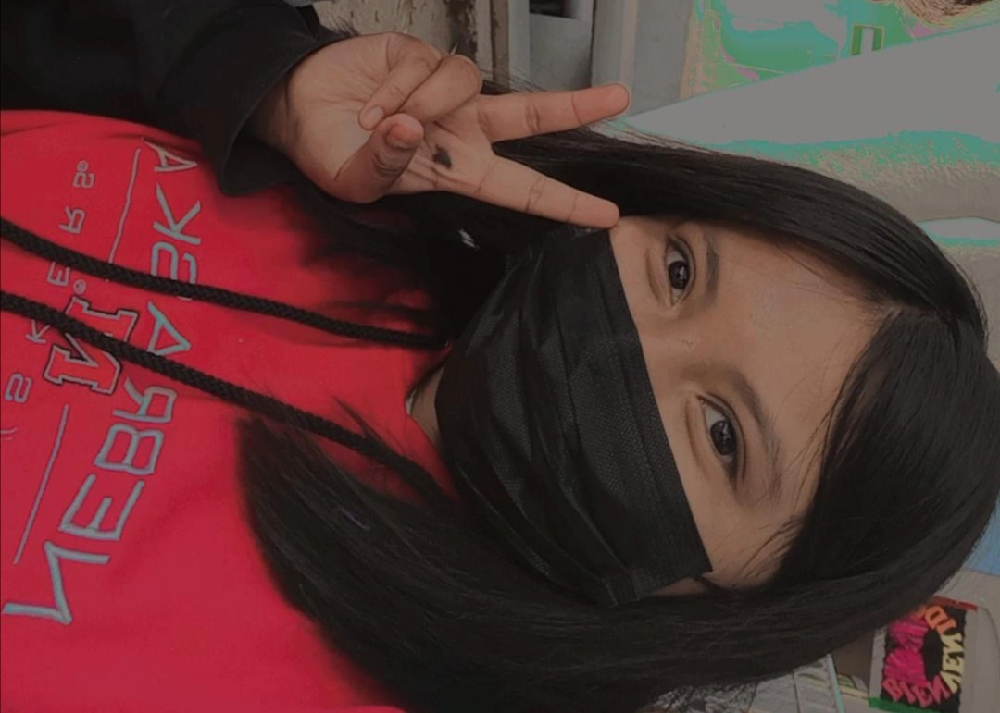

Hola, soy Lizbeth de Jesús Bernal Franco, una estudiante que cursa el primer semestre de universidad en la Ingeniería en Tecnologías de la Información y Comunicaciones. En lo personal me considero como una persona de carácter fuerte pero sensible, tambien puedo ser un poco perezosa y grosera (cuando agarro confianza). 
Por recomendación, al final del quinto semestre tenía que pensar en que universidad y carrera hiba estudiar, no podía irme lejos
a estudiar o quizás si pero no era recomendable y sostenible, asi que investigue en el Itsoeh las carreras que ofrecen, y la verdad solo
me interesó tres, despues nos invitaron a una conferencia en el Itoseh sobre la carrera de TIC'S y se me hizo tan interesante todo lo que mostraron
que decide estudiarla. (No se a donde me meti, vengo de la especialidad Técnico en ofimática)
Vivo en el municipio Mixquiahula de Juárez, el nombre Mixquiahuala significa "lugar que rodea a los mesquites" o "lugar circundado de mezquites",
y es llamado de Juárez en honor al presidente Benito Juárez García.
El municipio de Mixquiahuala de Juárez es uno de los ochenta y cuatro municipios que conforman el estado de Hidalgo, México.